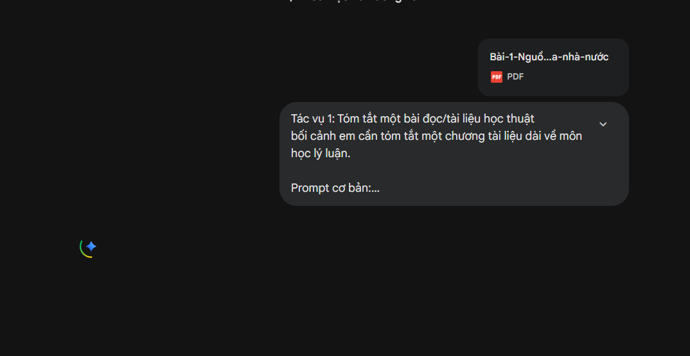
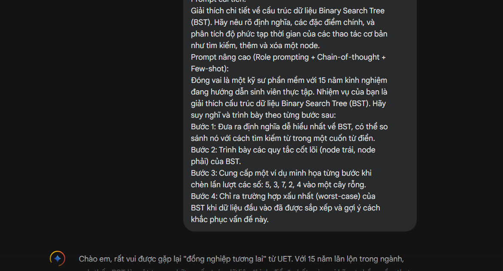
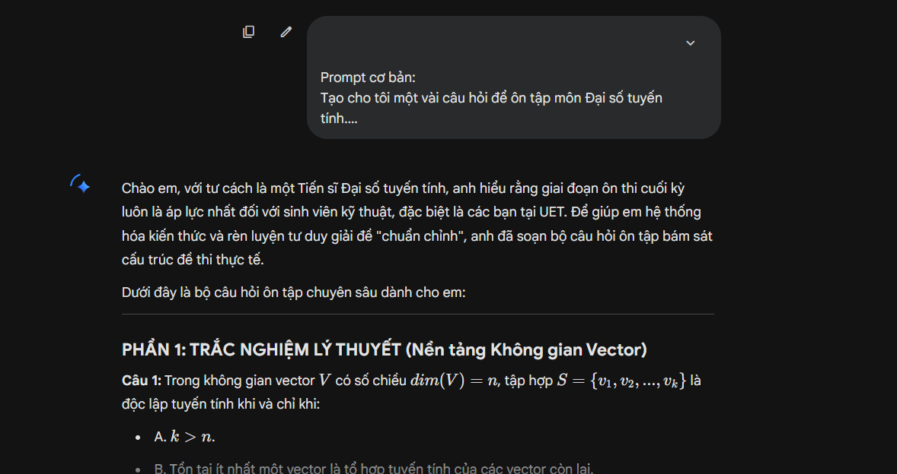

Sinh viên: Triệu Văn Duy — Mã SV: 25020090
Mục tiêu: Tóm tắt một chương tài liệu dài về môn học lý luận.

Mục tiêu: Khái niệm quan trọng trong môn Cấu trúc dữ liệu và giải thuật (DSA).

Mục tiêu: Áp dụng cho việc ôn thi môn Đại số tuyến tính.

| Tác vụ học tập | Loại Prompt | Mức độ bám sát yêu cầu | Độ chi tiết & Chất lượng nội dung | Khả năng kiểm soát định dạng | Đánh giá chung |
|---|---|---|---|---|---|
| Tóm tắt tài liệu | Cơ bản | Trung bình. Thường tóm tắt quá ngắn hoặc bỏ sót ý chính. | Thấp. Câu văn chung chung, thiếu điểm nhấn. | Thấp. AI tự quyết định định dạng (thường là đoạn dài). | Không tối ưu cho học thuật, tốn thời gian đọc lại. |
| Cải tiến | Tốt. Bắt được các từ khóa cốt lõi của văn bản. | Khá. Các ý được tách bạch rõ ràng. | Tốt. Trình bày đúng dạng gạch đầu dòng theo yêu cầu. | Hiệu quả để nắm bắt thông tin nhanh. | |
| Nâng cao | Rất tốt. Đảm bảo đúng trọng tâm lý luận. | Rất cao. Có sự liên kết thực tiễn thông qua ví dụ. | Rất tốt. Tuân thủ nghiêm ngặt cấu trúc 3 bước đề ra. | Hoàn hảo cho sinh viên cần hiểu sâu và vận dụng. | |
| Giải thích khái niệm (DSA) | Cơ bản | Khá. Đưa ra được định nghĩa chuẩn SGK. | Thấp. Thiếu tính ứng dụng và phân tích độ phức tạp. | Thấp. Trình bày liền mạch, khó theo dõi. | Chỉ phù hợp để tra cứu nhanh bề mặt. |
| Cải tiến | Tốt. Đầy đủ khái niệm và các thao tác cơ bản. | Khá. Có đề cập đến Big O (độ phức tạp thời gian). | Khá. Cấu trúc rõ ràng hơn. | Đủ để ôn tập lý thuyết cơ bản. | |
| Nâng cao | Rất tốt. Giọng văn hướng dẫn dễ hiểu, sư phạm. | Rất cao. Chỉ ra được cả trường hợp xấu nhất (worst-case). | Rất tốt. Trình bày theo từng bước (Step 1, 2, 3...) logic. | Giúp sinh viên hiểu tận gốc rễ vấn đề như có mentor. | |
| Tạo bộ câu hỏi (Toán) | Cơ bản | Trung bình. Thường quá dễ hoặc không sát đại học. | Thấp. Chỉ có câu hỏi, không có giải thích. | Thấp. Hỗn lộn giữa trắc nghiệm và tự luận. | Giá trị sử dụng thấp. |
| Cải tiến | Tốt. Đúng chủ đề Không gian vector & Ma trận. | Khá. Có đáp án đi kèm để đối chiếu. | Khá. Số lượng và phạm vi câu hỏi được kiểm soát. | Dùng tốt để tự luyện tập nhanh. | |
| Nâng cao | Rất tốt. Độ khó phù hợp đề thi đại học kỹ thuật. | Rất cao. Bài giải tự luận chi tiết từng bước tính toán. | Rất tốt. Phân tách rõ phần trắc nghiệm và tự luận. | Trở thành một bài thi thử hoàn chỉnh và chất lượng. |
Sự khác biệt về chất lượng đầu ra giữa các prompt nằm ở cách con người điều hướng tư duy của AI. Prompt cơ bản thất bại vì nó giao toàn quyền quyết định cho máy móc, dẫn đến những câu trả lời mang tính rập khuôn và bề mặt. Trong khi đó, prompt nâng cao hiệu quả vượt trội nhờ áp dụng các kỹ thuật sau:
Từ các thử nghiệm trên, em có thể đúc kết lại các nguyên tắc cốt lõi sau để đưa vào phần kết luận của báo cáo: